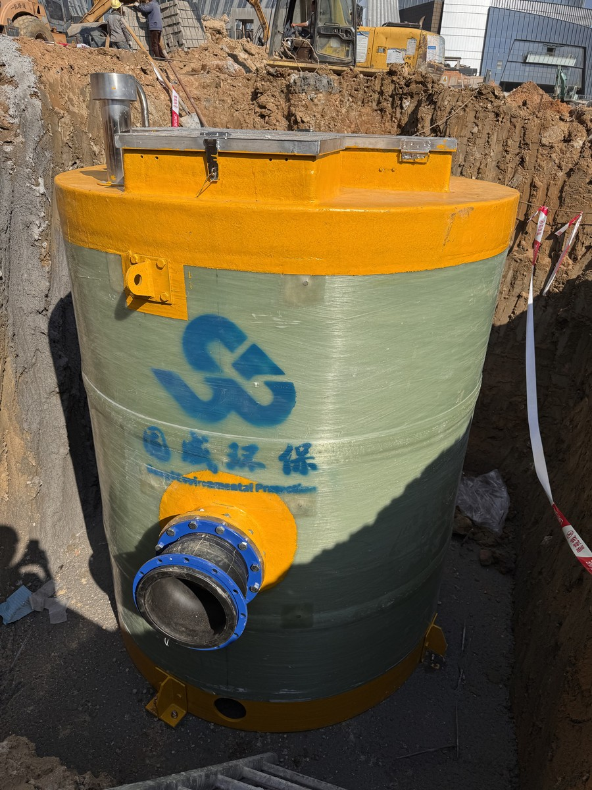

固威环保广州市固威环保科技开发有限公司
固威环保广州市固威环保科技开发有限公司一体化泵站
主要设备
01 / 项目介绍
从泵站主体到配套电控，展示设备结构、安装位置和接线细节。


主要设备
设计流量与扬程
泵组数量与功率
泵站筒体在现场完成吊装、入坑就位与底部固定，内部设置管路、爬梯和检修平台。
设备型号、筒体尺寸及固威项目服务范围：〔待确认〕。
02 / 工艺与系统
通过顶部检修口，可以查看内部管路、爬梯和平台的布置关系。
管路沿筒体内部布置，与设备接口衔接。
展示检修通道与内部作业空间的位置。
展示检修口、盖板及通风管的设置。
03 / 项目设备
设备与配置对应展示，图片可点击放大查看。
04 / 现场实施
记录泵站到货、筒体吊装及底部固定作业。


05 / 设备配套
展示本项目电控柜内的控制元件、端子接线与配电回路标识。


控制元件、端子排和线槽集中布置，接线与回路编号对应。
柜内设置分路开关和用途标识，便于对应设备回路。
1. 项目用于雨水排涝还是污水提升，服务哪个区域。
2. 已有的流量、扬程和场地条件，是新建还是改造。
3. 您现在最想解决的问题是什么。
没有完整图纸或技术资料，也可以先说明已知情况。